PKKA — Dokumentacja Techniczna
Keycloak 26 + Discord OIDC + Guild Verification + Spring Boot 4
Architektura systemu
Decyzje architektoniczne
System oparty jest na rozdzieleniu odpowiedzialności między dwa komponenty:
| Komponent | Odpowiedzialność |
|---|---|
| Keycloak | Wyłącznie tożsamość — autentykacja, zarządzanie kontami, federacja przez Discord OIDC, przechowywanie tokenów brokera |
| Spring Boot | Logika biznesowa — weryfikacja przynależności do serwera Discord, nadawanie ról przez Keycloak Admin API |
Zrezygnowano z customowych wtyczek Keycloaka (np. keycloak-discord) na rzecz natywnego OIDC:
| Problem z wtyczkami | Rozwiązanie w tej architekturze |
|---|---|
Oparte na OAuth2, nie OIDC — brak weryfikacji pola aud w ID tokenie podczas broker handshake (ryzyko Confused Deputy Attack) | Keycloak weryfikuje aud ID tokenu podczas wymiany authorization code — blokuje podstawienie kodu wygenerowanego dla innego client_id |
Ręczne mapowanie profilu i ról w .jar | Keycloak obsługuje to przez standardowe mappery |
Konieczność utrzymania wersji .jar zgodnej z Keycloakiem | Brak zewnętrznych zależności, zero maintenance |
/users/@me/guilds nie weryfikuje client_id, bearer token wystarczy. Korzyść OIDC jest wyłącznie w warstwie brokera:
| Etap | Token | Weryfikacja aud | Korzyść OIDC nad OAuth2 |
|---|---|---|---|
| Broker handshake (Keycloak ↔ Discord) | ID token (JWT) | ✅ Keycloak weryfikuje | Tak — blokuje Confused Deputy |
| Runtime API calls (Spring ↔ Discord API) | Access token (opaque) | ❌ Discord nie weryfikuje | Nie — identyczne jak OAuth2 |
Przepływ — Guild Verification
Infrastruktura — Docker
# docker-compose.yml
services:
postgres:
image: postgres:16
container_name: iam-postgres
ports:
- "5432:5432"
environment:
POSTGRES_DB: keycloak
POSTGRES_USER: keycloak
POSTGRES_PASSWORD: password
volumes:
- postgres_data:/var/lib/postgresql/data
networks:
- iam-network
healthcheck:
test: ["CMD-SHELL", "pg_isready -U keycloak -d keycloak"]
interval: 10s
timeout: 5s
retries: 5
keycloak:
image: quay.io/keycloak/keycloak:26.0.8
container_name: iam-keycloak
command: start-dev # Tryb deweloperski, do zmiany na "start" w produkcji
environment:
KC_DB: postgres
KC_DB_URL: jdbc:postgresql://postgres:5432/keycloak
KC_DB_USERNAME: keycloak
KC_DB_PASSWORD: password
KC_BOOTSTRAP_ADMIN_USERNAME: admin
KC_BOOTSTRAP_ADMIN_PASSWORD: admin
KC_HOSTNAME: localhost
KC_HTTP_ENABLED: "true"
ports:
- "8081:8081"
depends_on:
postgres:
condition: service_healthy
networks:
- iam-network
mailpit:
image: axllent/mailpit:latest
container_name: iam-mailpit
ports:
- "8025:8025" # UI web
- "1025:1025" # SMTP
networks:
- iam-network
volumes:
postgres_data:
networks:
iam-network:
driver: bridgeZmienne KC_BOOTSTRAP_ADMIN_* działa tylko przy pierwszym starcie (tworzeniu bazy). Przy kolejnych uruchomieniach Keycloak używa konta zapisanego w PostgreSQL.1) Zaloguj się jednorazowym bootstrap adminem do
master.2) Users → Add user → ustaw email/username i zapisz.
3) Credentials → ustaw hasło (Temporary = OFF).
4) Role mapping → Assign role → Filter by realm roles → nadaj
admin.5) Usuń bootstrap konto.
6) Usuń
KC_BOOTSTRAP_ADMIN_USERNAME/KC_BOOTSTRAP_ADMIN_PASSWORD z docker-compose.yml i zrestartuj.
Import wyeksportowanego Realmu
Jeśli posiadasz gotowy plik konfiguracyjny realm-export.json, możesz załadować go przy starcie modyfikując sekcję keycloak w pliku docker-compose.yml. Należy dodać flagę --import-realm do komendy oraz podmontować plik JSON bezpośrednio w odpowiednią ścieżkę katalogu importów w kontenerze.
keycloak:
# ... pozostałe dyrektywy bez zmian ...
command: start-dev --import-realm
volumes:
- ./realm-export.json:/opt/keycloak/data/import/realm.json:ro:roSkrót
:ro oznacza read-only (tylko do odczytu). Gwarantuje to, że baza danych / aplikacja dążąca do załadowania tych danych wewnątrz kontenera nie będzie w stanie nadpisać ani zmodyfikować zawartości Twojego lokalnego pliku źródłowego realm-export.json.Konfiguracja środowiska .env
Pamiętaj, że po udanym imporcie z tego pliku należy odpowiednio skonfigurować plik
.env w katalogu /backend. Zmienne, o które chodzi, to te użyte w konfiguracji Springa (opisane w sekcji application.yml: KEYCLOAK_WEB_CLIENT_SECRET, KEYCLOAK_MOBILE_CLIENT_SECRET, KEYCLOAK_ISSUER_URI, DISCORD_GUILD_ID, itp.).
Discord Developer Portal
Wejdź na https://discord.com/developers/applications i wybierz swoją aplikację.
Sidebar → OAuth2 → sekcja Redirects → Add Redirect:
http://localhost:8081/realms/pkka/broker/discord/endpointKliknij Save Changes. Skopiuj Client ID i wygeneruj Client Secret.
Keycloak — Realm
master służy wyłącznie do administracji Keycloakiem. Nigdy nie twórz tam użytkowników ani klientów swojej aplikacji.Tworzenie Realmu
Lewy górny róg → kliknij nazwę aktualnego realmu → Create realm
Realm name: pkka — pole Resource file zostaw puste (służy do importu JSON z gotowej konfiguracji). Kliknij Create.
Zakładka Login
| Opcja | Wartość | Dlaczego |
|---|---|---|
| User registration | ON | Samodzielna rejestracja emailem |
| Forgot password | ON | Link "zapomniałem hasła" |
| Remember me | ON | Checkbox na stronie logowania |
| Verify email | ON | Wyłącz tymczasowo jeśli brak SMTP |
| Login with email | ON | Logowanie emailem zamiast usernamem |
| Duplicate emails | OFF | Jedno konto na jeden adres email |
| SSL Required | none | Tylko dev — na prod: external requests |
Zakładka Email (Mailpit)
| Pole | Wartość |
|---|---|
| From | noreply@pkka.local |
| From display name | PKKA |
| Host | mailpit |
| Port | 1025 |
Dodatkowa konfiguracja zabezpieczeń i sesji
Skonfigurowano również poniższe wartości w ustawieniach realmu (konkretne parametry są poufne ze względów bezpieczeństwa):
- Realm settings → Security Defenses → Brute Force Mode: Skonfigurowano Lockout temporarily (Brute Force Mode), w tym parametry takie jak Max login failures, Strategy to increase wait time, Wait increment, Max wait, Failure reset time, Quick login check milliseconds oraz Minimum quick login wait.
- Realm settings → Sessions: Skonfigurowano parametry sesji, SSO Session Settings (SSO Session Idle, SSO Session Max), Offline session settings (Offline Session Idle, Offline Session Max Limited) oraz Login settings (Login timeout, Login action timeout).
- Realm settings → Tokens: Skonfigurowano: Refresh tokens (aktywowanie opcji Revoke Refresh Token umożliwia skuteczne unieważnienie RT po jego użyciu; skonfigurowano również Refresh Token Max Reuse), Access tokens (Lifespan, Lifespan For Implicit Flow, Client Login Timeout) a także Action tokens (User-Initiated Action Lifespan, Default Admin-Initiated Action Lifespan).
Efekt — działające emaile i rejestracja
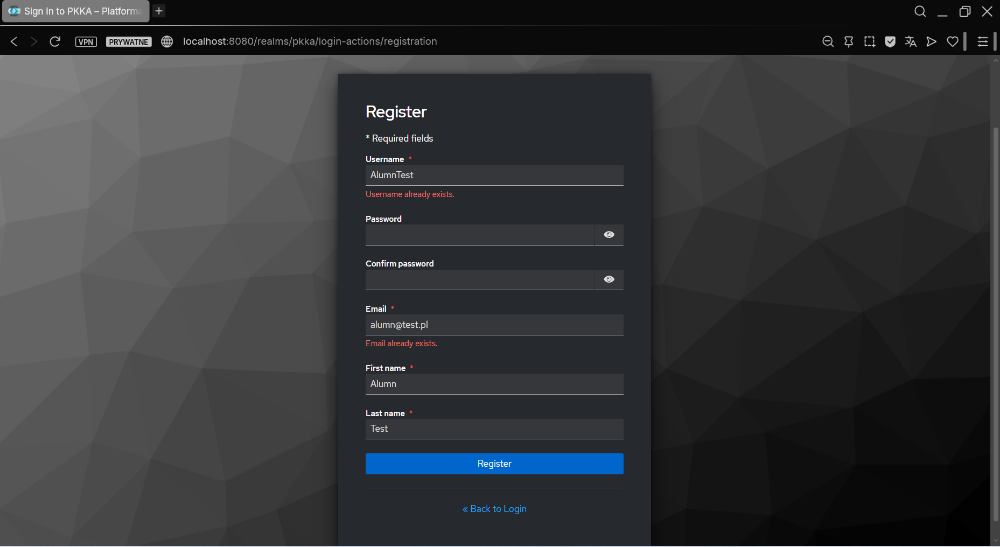
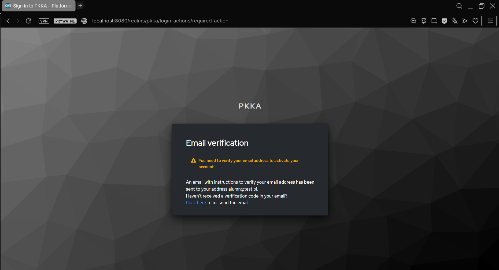
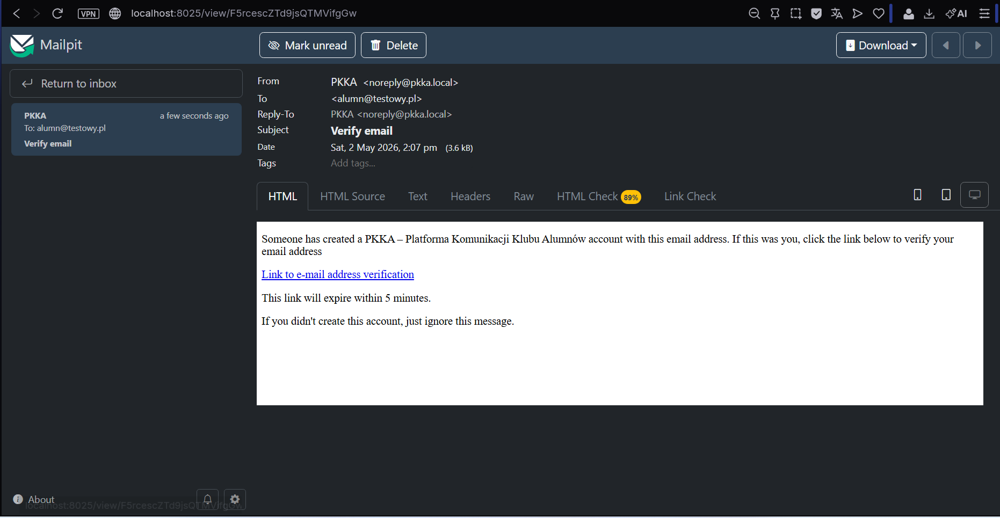
http://localhost:8025) — przechwycony email weryfikacyjny od PKKAKeycloak — Client pkka-web
Sidebar → Clients → Create client
Ekran 1 — General Settings
| Pole | Wartość |
|---|---|
| Client type | OpenID Connect |
| Client ID * | pkka-web |
| Name | PKKA Web |
| Description | (puste) |
Ekran 2 — Capability config
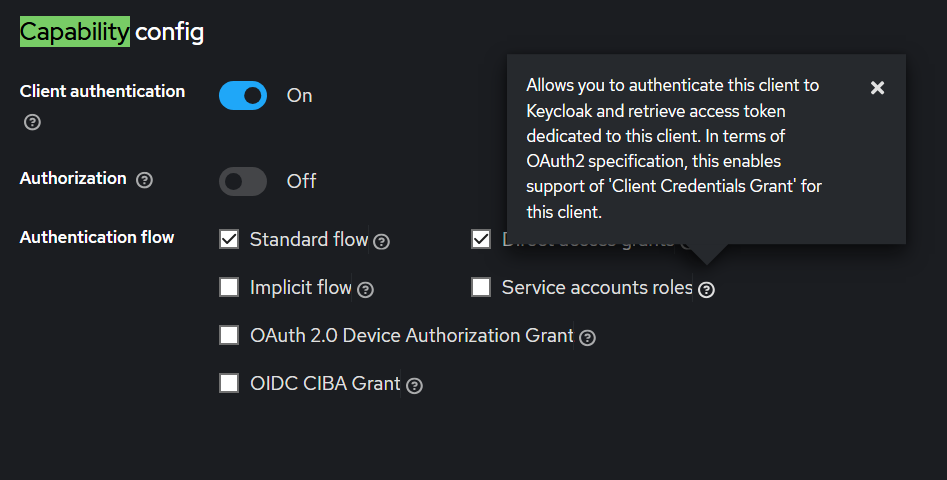
| Opcja | Wartość | Dlaczego |
|---|---|---|
| Client authentication | ON | Confidential client — client-secret trzymany wyłącznie po stronie serwera |
| Authorization | OFF | Nie potrzebujemy fine-grained authz |
| Standard flow | ✓ | Authorization Code Flow z PKCE |
| Direct access grants | ✗ | Wyłącz — włącz tylko tymczasowo do testów Postmanem |
| Service accounts enabled | ✓ | Wymagane do Keycloak Admin API (nadawanie ról) |
Ekran 3 — Login settings
| Pole | Wartość (dev) | Wartość (prod) |
|---|---|---|
| Root URL | http://localhost:8080 | https://api.pkka.example.com |
| Valid redirect URIs | http://localhost:8080/login/oauth2/code/keycloak-web | https://api.pkka.example.com/login/oauth2/code/keycloak-web |
| Valid post logout redirect URIs | http://localhost:8080/* | https://api.pkka.example.com/* |
| Web origins | http://localhost:8080 | https://api.pkka.example.com |
Użyj
/login/oauth2/code/keycloak-web zamiast /*. Wildcard pozwoliłby na Open Redirect Attack — atakujący podstawia własny redirect_uri i przechwytuje authorization code. Spring Security weryfikuje redirect_uri przy każdej wymianie code → token.
Aktywacja PKCE — zakładka Advanced
Po zapisaniu klienta przejdź do zakładki Advanced:
| Pole | Wartość | Dlaczego |
|---|---|---|
| Proof Key for Code Exchange Code Challenge Method | S256 | Wymusza PKCE SHA-256 — Keycloak odrzuci auth request bez code_challenge |
code_verifier i code_challenge dzięki konfiguracji OAuth2AuthorizationRequestCustomizers.withPkce() w SecurityConfig. Działa to dla obu rejestracji (keycloak-web i keycloak-mobile) bez dodatkowej konfiguracji.
Skopiuj Client Secret
Zakładka Credentials → skopiuj Client secret → ustaw jako KEYCLOAK_WEB_CLIENT_SECRET w .env.
Mapper ról — opcjonalnie
Domyślnie Keycloak dołącza realm_access.roles tylko do Access Tokena, nie ID Tokena. Poprzednie podejście (GrantedAuthoritiesMapper) wymagało dodania mappera "User Realm Role → Add to ID token: ON" — to konfiguracyjny overhead po stronie Keycloaka.
SecurityConfig używa niestandardowego OidcUserService, który dekoduje Access Token (zawsze niesie realm_access.roles) tym samym JwtDecoder co ścieżka Mobile. Zero dodatkowej konfiguracji Keycloaka.
Client scopes — ogranicz claims w Access Tokenie
W obu klientach (pkka-web i pkka-mobile): Clients → [client] → Client scopes → scope profile/email → Mappers. Dla poniższych mapperów ustaw Add to access token = OFF (pozostaw Add to ID token i Add to userinfo bez zmian):
| Mapper / claim | Ustawienie |
|---|---|
email | OFF — Add to access token |
given_name | OFF — Add to access token |
name (full name) | OFF — Add to access token |
nickname | OFF — Add to access token |
preferred_username | OFF — Add to access token |
middle_name | OFF — Add to access token |
family_name | OFF — Add to access token |
gender | OFF — Add to access token |
Cel: mniejszy Access Token/RODO dla API; dane profilu pozostają w ID tokenie / userinfo.
Service Account Roles
Zakładka Service account roles → Assign role → Filter by clients:
| Klient | Rola | Po co |
|---|---|---|
realm-management | manage-users | Szukanie użytkowników, nadawanie i odbieranie ról realmowych przez Admin API |
broker / read-token dla service account?Opcja Stored tokens readable = ON na IDP Discorda automatycznie przyznaje rolę
broker.read-token samemu użytkownikowi przy pierwszym logowaniu. Spring Boot wywołuje GET /broker/discord/token tokenem użytkownika — nie potrzebuje do tego service account.Service account jest używany tylko do Admin API (nadawanie roli
verified-alumn).
Keycloak — Client pkka-mobile
Klient dla ścieżki mobilnej BFF Token Handler Pattern. Konfiguracja identyczna jak pkka-web (Client Auth ON + PKCE S256 + Standard Flow), z jedną różnicą: brak Service Account (Admin API obsługuje pkka-web).
oauth2Login w Spring. Rozgałęzienie Web ↔ Mobile następuje wyłącznie w BffAuthenticationSuccessHandler na podstawie registrationId. Mobilka nie wymaga żadnego osobnego kontrolera.
Przepływ Mobile — oauth2Login przez system browser
Ekran 1 — General Settings
Sidebar → Clients → Create client
| Pole | Wartość |
|---|---|
| Client type | OpenID Connect |
| Client ID * | pkka-mobile |
| Name | PKKA Mobile |
| Description | (puste) |
Ekran 2 — Capability config
| Opcja | Wartość | Dlaczego |
|---|---|---|
| Client authentication | ON | Confidential — client-secret wyłącznie po stronie backendu |
| Authorization | OFF | Nie potrzebujemy fine-grained authz |
| Standard flow | ✓ | Authorization Code Flow z PKCE |
| Direct access grants | ✗ | Wyłącz — mobilka zawsze przez przeglądarkę systemową |
| Service accounts enabled | ✗ | Admin API → obsługuje pkka-web |
Ekran 3 — Login settings
| Pole | Wartość (dev) | Wartość (prod) |
|---|---|---|
| Root URL | http://localhost:8080 | https://api.pkka.example.com |
| Valid redirect URIs | http://localhost:8080/login/oauth2/code/keycloak-mobile | https://api.pkka.example.com/login/oauth2/code/keycloak-mobile |
| Valid post logout redirect URIs | (puste) | (puste) |
| Web origins | (puste) | (puste) |
{baseUrl}/login/oauth2/code/keycloak-mobile — Spring generuje tę wartość automatycznie z szablonu {baseUrl}/login/oauth2/code/{registrationId}. Wildcard /* otwiera wektor Open Redirect Attack.
Aktywacja PKCE — zakładka Advanced
| Pole | Wartość | Dlaczego |
|---|---|---|
| Proof Key for Code Exchange Code Challenge Method | S256 | Wymusza PKCE SHA-256 — ochrona przed przechwyceniem kodu przez inną aplikację na urządzeniu (intent hijacking) |
S256, nie plain. Metoda plain jest de facto bezużyteczna — code_challenge jest wysyłany jawnie w URL i atakujący może użyć go bezpośrednio jako code_verifier.Skopiuj Client Secret
Zakładka Credentials → skopiuj Client secret → ustaw jako KEYCLOAK_MOBILE_CLIENT_SECRET w .env backendu (nigdy w kodzie mobilki).
Porównanie obu klientów
| Cecha | pkka-web (rejestracja: keycloak-web) | pkka-mobile (rejestracja: keycloak-mobile) |
|---|---|---|
| Client Authentication | ON (confidential) | ON (confidential) |
| PKCE | S256 (wymagany) | S256 (wymagany) |
| client-authentication-method | client_secret_basic | client_secret_basic |
| Redirect URI | /login/oauth2/code/keycloak-web | /login/oauth2/code/keycloak-mobile |
| Service Account | ✓ (Admin API, manage-users) | ✗ |
| Tokeny po zakończeniu flow | W sesji Spring (JSESSIONID) | Przekazane przez deep link (Keychain) |
| Identyfikacja kolejnych żądań | Cookie JSESSIONID | Header Authorization: Bearer |
| Punkt wejścia mobilki | nie dotyczy | /oauth2/authorization/keycloak-mobile |
Keycloak — Identity Provider Discord
Sidebar → Identity providers → Add provider → OpenID Connect v1.0
Formularz podstawowy
| Pole | Wartość |
|---|---|
| Alias | discord |
| Display name | Discord |
| Enabled | ON |
| Hide on login page | ON — Spring wysyła kc_idp_hint=discord, przycisk niepotrzebny |
| Store tokens | ON |
| Stored tokens readable | ON |
| Discovery endpoint | https://discord.com/.well-known/openid-configuration → kliknij Import |
| Client ID | Discord Client ID |
| Client Secret | Discord Client Secret |
| Client authentication | client_secret_basic |
| PKCE | ON — metoda S256 |
| Pass login_hint | ON — umożliwia prefill loginu na stronie Discorda |
| Default Scopes | openid email identify guilds |
client_secret_post → client_secret_basic.Discord wspiera obie metody.
client_secret_basic to standard RFC 6749 — credentials lecą w nagłówku Authorization: Basic base64(id:secret), nie w body requestu. Zgodne z PKCE i lepiej wspierane przez walidatory OAuth2.
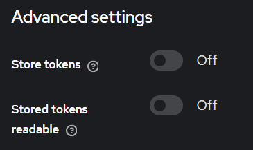
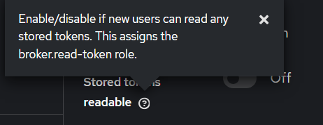
broker.read-tokenidentify zwraca username i avatar Discorda. Scope guilds zwraca listę serwerów. Oba są wymagane dla weryfikacji alumni.Efekt — zgoda Discord po dodaniu scope guilds
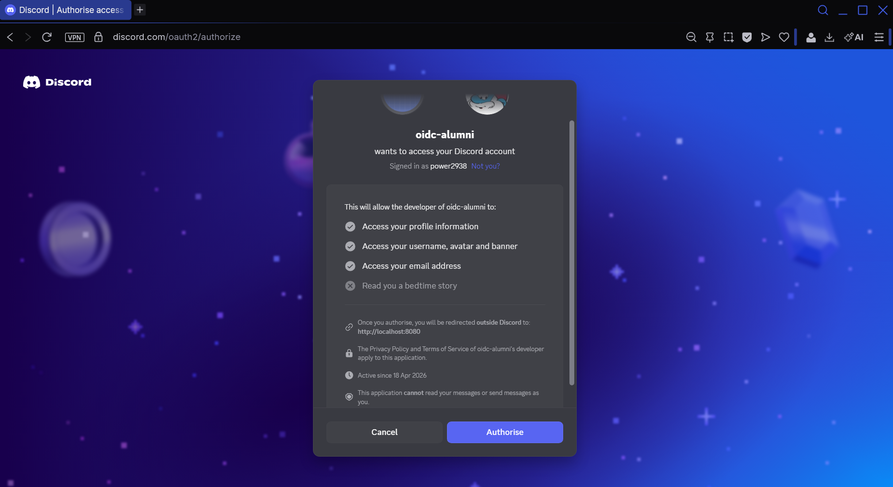
guilds — brak "Know what servers you're in"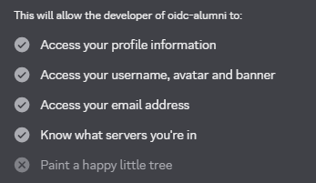
guilds — pojawia się "Know what servers you're in"Advanced settings (po kliknięciu Save — wróć do edycji IDP)
| Pole | Wartość | Dlaczego |
|---|---|---|
| Trust email | ON | Discord weryfikuje maile — nie pytamy użytkownika ponownie |
| Account linking policy | DEFAULT | Tworzy nowe konta LUB linkuje z istniejącym gdy email się zgadza |
LINK_ONLY — blokuje tworzenie nowych kont. Użytkownicy logujący się Discordem po raz pierwszy dostaną błąd.Mappery atrybutów (zakładka Mappers — pojawia się po Save)
Zakładka Mappers jest dostępna dopiero po pierwszym zapisaniu IDP.
Mapper 1 — Username
| Pole | Wartość |
|---|---|
| Name | discord-username |
| Sync mode | Inherit |
| Mapper type | Attribute Importer |
| Claim | preferred_username |
| User Attribute Name | username |
Mapper 2 — Avatar (opcjonalnie)
| Pole | Wartość |
|---|---|
| Name | discord-avatar |
| Mapper type | Attribute Importer |
| Claim | picture |
| User Attribute Name | picture |
preferred_username pochodzi z Userinfo Endpoint Discorda — Keycloak odpytuje go automatycznie po logowaniu. Weryfikacja: Users → [konto] → zakładka Details.Discord IDP Bypass
Parametr kc_idp_hint=discord powoduje, że Keycloak pomija własną stronę logowania i przekierowuje przeglądarkę bezpośrednio do Discorda. Bypass jest stosowany dla obu logowań/rejestracji (keycloak-web i keycloak-mobile) — w obu przypadkach chcemy ominąć ekran Keycloaka i trafić prosto do Discorda.
OAuth2AuthorizationRequestResolver sprawdza registrationId z atrybutów żądania.
Konfiguracja IDP — Hide on login page
Ustaw Hide on login page: OFF — przeglądarka webowa powinna widzieć przycisk Discord na stronie Keycloaka. Mobilka i tak dostaje kc_idp_hint i pomija ten ekran.
Implementacja — DiscordBypassRequestResolver
PKCE S256 dla obu rejestracji. kc_idp_hint=discord jest wstrzykiwany gdy żądanie zawiera parametr URL ?idp=discord — mobilka i web mogą go użyć jawnie, by ominąć stronę logowania Keycloaka i trafiać prosto do Discorda:
@Configuration
public class DiscordBypassRequestResolver {
@Bean
public OAuth2AuthorizationRequestResolver discordBypassResolver(
ClientRegistrationRepository repo) {
DefaultOAuth2AuthorizationRequestResolver resolver =
new DefaultOAuth2AuthorizationRequestResolver(repo, "/oauth2/authorization");
resolver.setAuthorizationRequestCustomizer( // PKCE dla wszystkich
OAuth2AuthorizationRequestCustomizers.withPkce());
return new OAuth2AuthorizationRequestResolver() {
@Override public OAuth2AuthorizationRequest resolve(HttpServletRequest request) {
return applyIdpHint(request, resolver.resolve(request));
}
@Override public OAuth2AuthorizationRequest resolve(
HttpServletRequest request, String clientRegistrationId) {
// WAŻNE: przekazujemy clientRegistrationId do delegate resolvers,
// bo Spring może wołać tę metodę bezpośrednio (z już określonym registrationId),
// np. z OAuth2AuthorizationRequestRedirectFilter.
// Bez tego resolver ignoruje argument i może zwrócić null lub złą rejestrację.
return applyIdpHint(request, resolver.resolve(request, clientRegistrationId));
}
private OAuth2AuthorizationRequest applyIdpHint(
HttpServletRequest request, OAuth2AuthorizationRequest authReq) {
if (authReq == null) return null;
String idpHint = request.getParameter("idp");
if (!"discord".equalsIgnoreCase(idpHint)) return authReq;
return OAuth2AuthorizationRequest.from(authReq)
.additionalParameters(p -> p.put("kc_idp_hint", "discord"))
.build();
}
};
}
}resolve(request, clientRegistrationId) musi przekazywać argument dalej?Spring Security wywołuje drugą przeciążoną metodę bezpośrednio z
OAuth2AuthorizationRequestRedirectFilter, gdy zna registrationId z atrybutów żądania. Przekazanie null lub ponowne parsowanie URL bez tego argumentu może spowodować, że delegate zwróci null (brak dopasowania) albo nieoczekiwanie wybierze inną rejestrację. Zawsze deleguj oba parametry do resolver.resolve(request, clientRegistrationId).
Efekt — bypass per parametr ?idp=discord
?idp=discord musi być dodany do URL inicjacji logowania. Alias discord musi odpowiadać polu Alias w konfiguracji IDP Keycloaka.
Keycloak — First Broker Login Flow
Sidebar → Authentication → flow first broker login
| Krok | Ustawienie | Znaczenie |
|---|---|---|
| Review Profile | DISABLED | Pomijamy formularz uzupełniania danych — Keycloak pobiera je z mapperów Discorda |
| Handle Existing Account | ALTERNATIVE | Wykonuje się gdy email z Discorda już istnieje w bazie |
| Verify Existing Account by Email | ALTERNATIVE | Wysyła mail weryfikacyjny przy linkowaniu kont — zabezpieczenie przed przejęciem konta |
ALTERNATIVE = krok wykona się jeśli zajdzie potrzeba, nie blokuje flow gdy nie jest potrzebny.Keycloak — Role i uprawnienia
Utwórz rolę verified-alumn
Sidebar → Realm roles → Create role → Role name: verified-alumn → Save.
Rola broker.read-token dla użytkownika
Endpoint /broker/discord/token wymaga tokenu samego użytkownika z rolą broker.read-token. Rola ta jest nadawana automatycznie gdy Stored tokens readable = ON — użytkownik otrzymuje ją przy pierwszym logowaniu przez Discord. Service account nie jest do tego potrzebny.
Frontend wysyła Keycloak AT użytkownika do Spring Boota → Spring Boot przekazuje go jako
Bearer do GET /realms/pkka/broker/discord/token → Keycloak sprawdza czy użytkownik ma rolę broker.read-token → zwraca jego Discord AT.Service account jest używany tylko do Admin API (nadawanie roli
verified-alumn).
Jeśli chcesz nadać ją ręcznie do testów:
Users → [konto] → Role mapping → Assign role → Filter by clients → broker / read-token → Assign
Keycloak — konfiguracja User Events i Admin Events
User Events
Ścieżka:
Realm Settings
→ Events
→ User events settings| Ustawienie | Wartość |
|---|---|
| Save events | ON |
| Expiration | 30 Days |
Admin Events
Ścieżka:
Realm Settings
→ Events
→ Admin events settings| Ustawienie | Wartość |
|---|---|
| Save events | ON |
| Include representation | ON |
| Expiration | 30 Days |
Weryfikacja
W zakładce Events w sekcjach Admin events i User events pojawiają się rekordy wykonanych operacji.
Weryfikacja konfiguracji Keycloaka
Otwórz w trybie incognito:
http://localhost:8081/realms/pkka/protocol/openid-connect/auth?client_id=pkka-web&response_type=code&scope=openid&redirect_uri=http://localhost:8080/login/oauth2/code/keycloak-web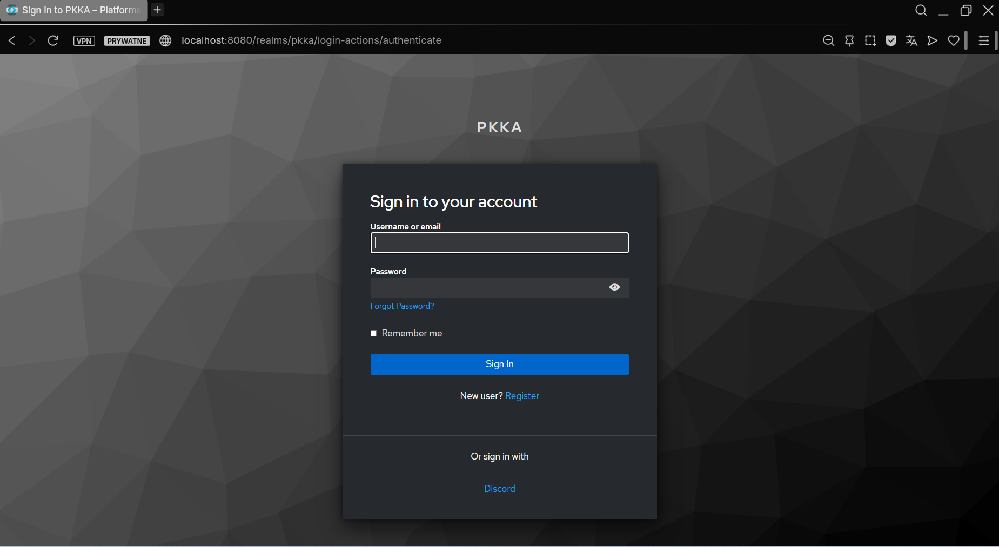
http://localhost:8081/realms/pkka/account to Panel Zarządzania Kontem — przyciski zewnętrznych providerów się tam nie pojawiają. To normalne zachowanie.Efekt logowania przez Discord
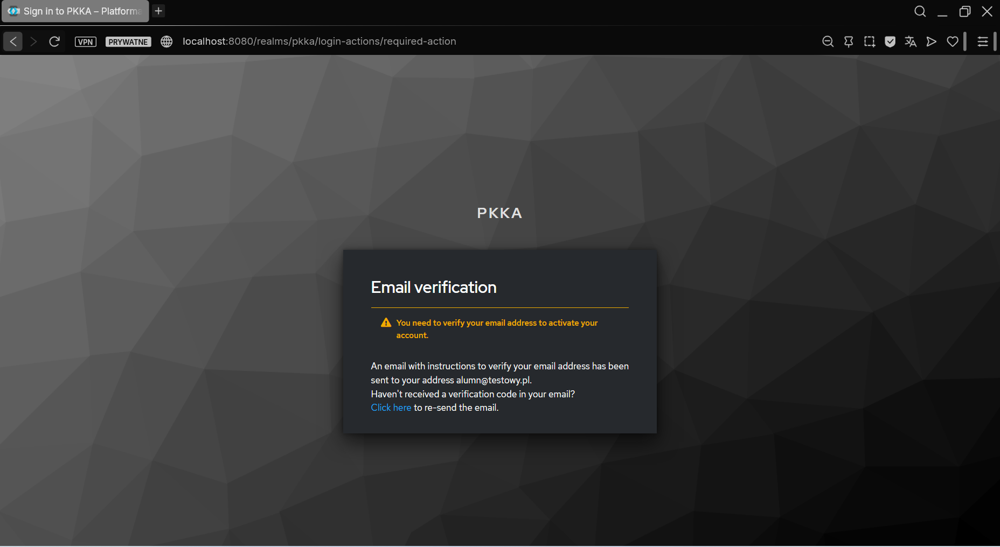
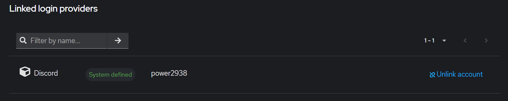
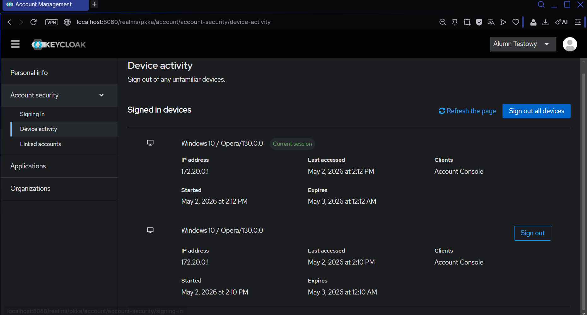
Testowanie przez Postman
Poniższy przepływ pozwala zweryfikować działanie całej integracji bez uruchamiania Spring Boota. Postman pełni rolę aplikacji frontendowej — wykonuje Authorization Code Flow żeby zdobyć Keycloak Access Token użytkownika.
Krok 1 — Dodaj Redirect URI Postmana do Keycloaka
Clients → pkka-web → Valid redirect URIs — dodaj tymczasowo:
https://oauth.pstmn.io/v1/callbackKrok 2 — Zdobądź Keycloak Access Token przez OAuth2 flow
Utwórz nowy request GET /broker/discord/token. Zakładka Authorization → Type: OAuth 2.0 → kliknij Get New Access Token.
Wypełnij formularz:
| Pole | Wartość |
|---|---|
| Grant Type | Authorization Code |
| Auth URL | http://localhost:8081/realms/pkka/protocol/openid-connect/auth |
| Access Token URL | http://localhost:8081/realms/pkka/protocol/openid-connect/token |
| Client ID | pkka-web |
| Client Secret | twój secret |
| Scope | openid |
| Redirect URI | https://oauth.pstmn.io/v1/callback |
Kliknij Proceed — otworzy się webview z prawdziwą stroną logowania Keycloaka z przyciskiem Discord.
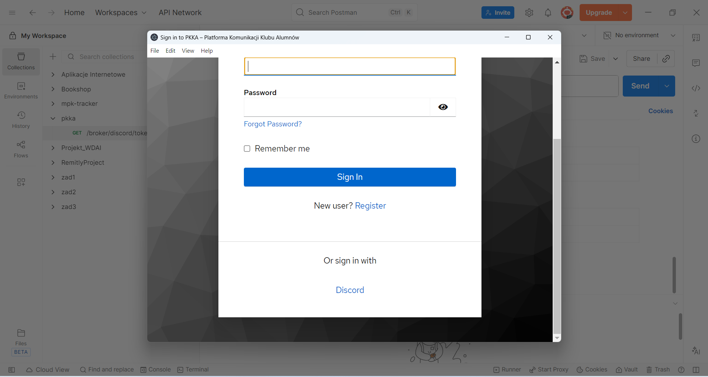
Discord pyta o zgodę. Upewnij się że widnieje "Know what servers you're in" — to potwierdza poprawność scope guilds.
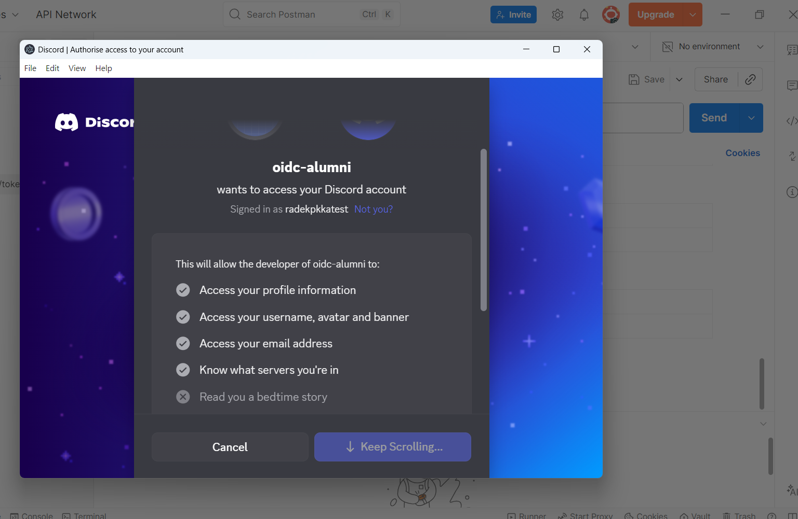
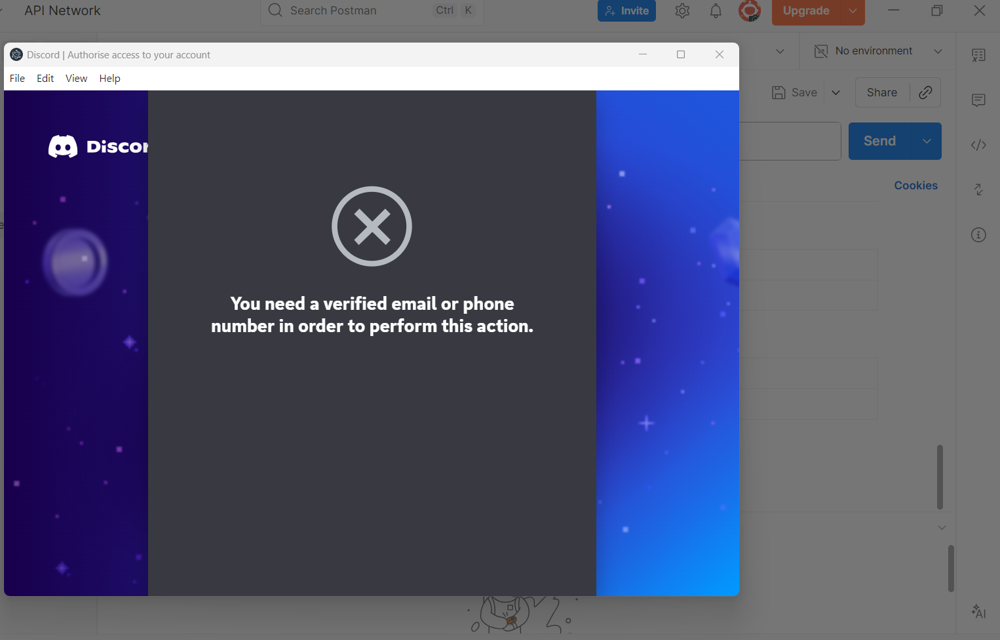
Po zalogowaniu przez Discord Postman przechwyci kod i wymieni go na token. Kliknij Use Token.
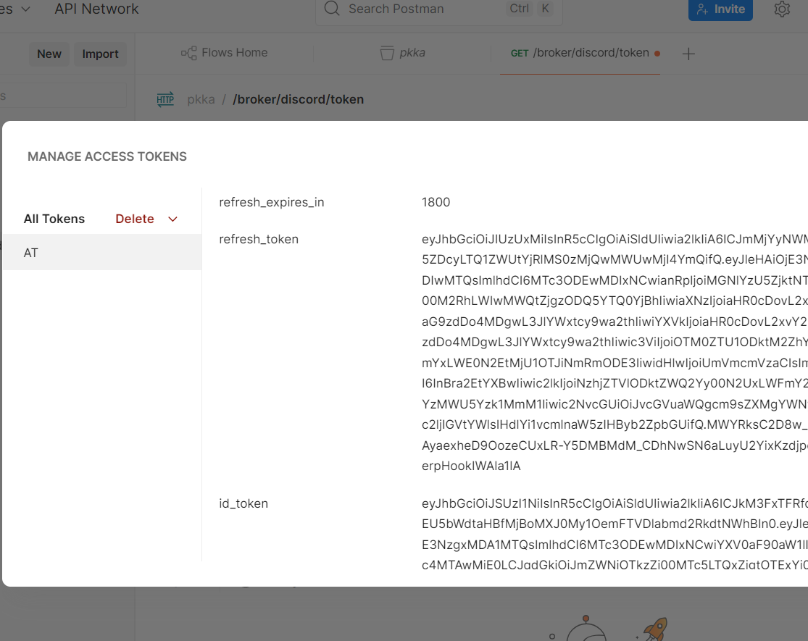
Krok 3 — Pobierz Discord Access Token z Keycloaka
GET http://localhost:8081/realms/pkka/broker/discord/token
Authorization: Bearer <KEYCLOAK_ACCESS_TOKEN>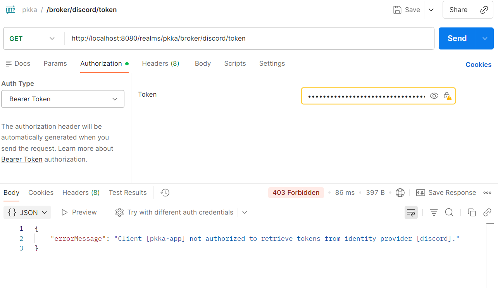
broker/read-token — Client not authorizedPo nadaniu roli broker.read-token użytkownikowi (przez Stored tokens readable = ON lub ręcznie w User → Role mapping) — wywołanie z AT użytkownika zwraca 200 OK:
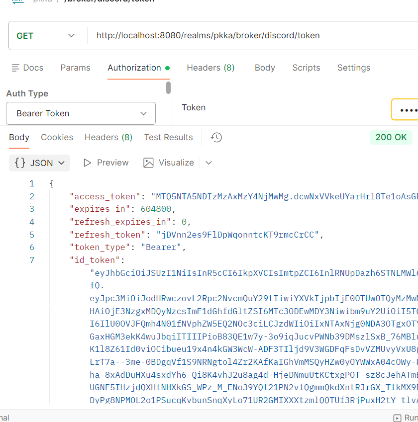
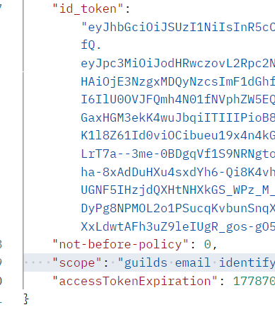
guilds email identify — potwierdzenie poprawnej konfiguracjiKrok 4 — Weryfikacja listy serwerów Discord
GET https://discord.com/api/users/@me/guilds
Authorization: Bearer <DISCORD_ACCESS_TOKEN>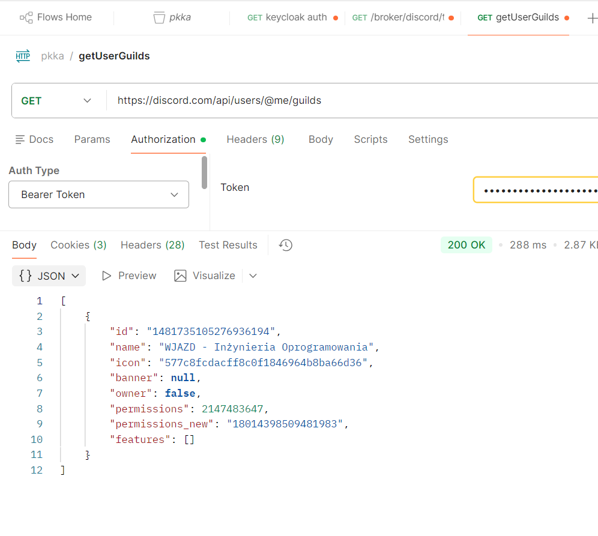
id to wartość do sprawdzenia w logice autoryzacji.Dalsze kroki — Spring Boot
Pełna implementacja Spring Boot z architekturą BFF Token Handler Pattern wymaga następujących komponentów. Szczegółowy kod SecurityConfig.java opisany w sekcji 19.
Wymagane zależności (build.gradle)
| Artefakt | Cel |
|---|---|
spring-boot-starter-webmvc | HTTP, REST kontrolery |
spring-boot-starter-security | Spring Security |
spring-boot-starter-oauth2-client | oauth2Login (ścieżka Web) + klient mobilny (pkka-mobile) |
spring-boot-starter-oauth2-resource-server | Walidacja Bearer JWT (ścieżka Mobile) — NOWE |
spring-boot-starter-thymeleaf | Templating HTML |
keycloak-admin-client:26.0.8 | Nadawanie ról przez Keycloak Admin API |
spring-boot-starter-oauth2-resource-server wnosi spring-security-oauth2-resource-server oraz spring-security-oauth2-jose (parsowanie i walidacja JWT/JWK). Zależność oauth2-client nie zawiera tych bibliotek — obie muszą być wymienione explicite.application.yml
Pełna konfiguracja z profilami dev i prod opisana w sekcji 15. Klucze wymagające uzupełnienia: KEYCLOAK_WEB_CLIENT_SECRET, KEYCLOAK_MOBILE_CLIENT_SECRET, KEYCLOAK_ISSUER_URI, DISCORD_GUILD_ID.
Komponenty do implementacji
| Klasa | Odpowiedzialność |
|---|---|
SecurityConfig | Dwie SecurityFilterChain: Chain 1 (/api/**), Chain 2 (login/logout). Konwertery ról dla Web (OidcUserService + AT) i Mobile (JWT). → sekcja 20 |
DiscordBypassRequestResolver | PKCE S256 + kc_idp_hint=discord dla obu logowań/rejestracji — bezpośredni bypass do Discord IDP. → sekcja 6b |
KeycloakAdminConfig | Bean Keycloak Admin Client (client credentials) do Admin API |
BffAuthenticationSuccessHandler | Po oauth2Login: Web → redirect z JSESSIONID, Mobile → deep link z AT+RT, sesja invalidowana. → sekcja 21 |
DiscordGuildService | Pobieranie Discord AT z Keycloaka, weryfikacja serwera, nadawanie roli |
GuildVerificationController | Endpoint POST /api/verify-guild — działa z obu ścieżek |
ProfileController | Dane zalogowanego użytkownika, obsługa OidcUser i Jwt |
SecurityConfig mapuje realm_access.roles na ROLE_* zarówno dla sesji Web (przez GrantedAuthoritiesMapper) jak i dla JWT Mobile (przez KeycloakJwtRoleConverter). Adnotacja @PreAuthorize("hasRole('VERIFIED_ALUMN')") na kontrolerze nie wymaga żadnej modyfikacji dla obsługi obu klientów.
Typowe błędy
| Błąd | Przyczyna | Rozwiązanie |
|---|---|---|
redirect_uri mismatch na Discordzie | Zły URI w Discord Dev Portal | Sprawdź: http://localhost:8081/realms/pkka/broker/discord/endpoint |
| Brak przycisku Discord | Hide on login page = ON | Zmień na OFF w ustawieniach IDP |
| Błąd przy pierwszym logowaniu Discordem | Account linking policy = LINK_ONLY | Zmień na DEFAULT |
| Email weryfikacyjny nie dochodzi | Brak SMTP | Uruchom Mailpit lub wyłącz tymczasowo Verify email |
403 Client not authorized to retrieve tokens | Brak roli broker.read-token na koncie użytkownika | Ustaw Stored tokens readable = ON w IDP Discord LUB ręcznie: Users → [konto] → Role mapping → Assign role → Filter by clients → broker / read-token |
403 z tokenem użytkownika na /broker/discord/token | Brak roli broker.read-token na koncie | Stored tokens readable = ON LUB ręczne nadanie roli w User → Role mapping |
| Auth failed w Postmanie z YubiKey | Webview Postmana nie obsługuje WebAuthn/FIDO2 | Użyj testowego konta bez 2FA |
| Discord: "verified email or phone" | Testowe konto Discord bez weryfikacji | Użyj konta z zweryfikowanym emailem |
Rola verified-alumn nie pojawia się w JWT | Stary token po nadaniu roli | Użytkownik musi uzyskać nowy token (ponowne logowanie) |
invalid_client w logach Spring | Zły Client Secret | Sprawdź application.yml vs zakładka Credentials w Keycloak |
| Brak przekierowania do Discorda (pojawia się Keycloak login) | Brak parametru kc_idp_hint w URL | Sprawdź czy discordBypassResolver bean jest poprawnie podłączony w Chain 2 |
redirect_uri mismatch przy logowaniu Spring→Keycloak | Keycloak ma inny URI niż Spring generuje | Sprawdź: Valid redirect URI w Keycloak = /login/oauth2/code/keycloak-web i /login/oauth2/code/keycloak-mobile |
Keycloak — Role i Grupy (na podstawie User Stories)
Na podstawie aktorów zdefiniowanych w miro_plan.md definiujemy cztery role i odpowiadające im grupy w realmie pkka. Grupy są wygodniejsze niż ręczne przypisywanie ról — użytkownik dodany do grupy dziedziczy jej role automatycznie.
Role realmowe (Realm Roles)
| Rola | Aktor z US | Uprawnienia |
|---|---|---|
user | Zalogowany użytkownik | Składanie wniosku o dołączenie, przeglądanie statusu, linkowanie konta Discord |
verified-alumn | Zweryfikowany alumn | Lista alumnów, materiały, wydarzenia, edycja profilu, grupy tematyczne |
admin | Administrator | Panel administracyjny, weryfikacja wniosków, tworzenie wydarzeń, ankiety, statystyki |
bot | Bot Discord | Service account — synchronizacja ról, powiadamianie o wydarzeniach |
user jest rolą bazową — każdy zarejestrowany użytkownik ją posiada. verified-alumn i admin są rolami addytywnymi — stackują się z user.Grupy (Groups)
Grupy upraszczają zarządzanie — zamiast przypisywać role każdemu użytkownikowi osobno, dodajesz go do grupy.
| Grupa | Role przypisane do grupy | Kto trafia do grupy |
|---|---|---|
users | user | Domyślna grupa — każdy nowo zarejestrowany użytkownik (ustaw jako Default Group) |
alumni | user, verified-alumn | Alumn po pozytywnym rozpatrzeniu wniosku przez admina |
administrators | user, verified-alumn, admin | Pracownicy wydziału / zarząd klubu |
bots | bot | Service account bota Discord |
Jak utworzyć role w Keycloak
Sidebar → Realm roles → Create role — powtórz dla każdej roli:
| Role name | Description |
|---|---|
user | Registered platform user |
verified-alumn | Verified AGH alumn |
admin | App admin |
bot | Discord bot service account |
Jak utworzyć grupy w Keycloak
Sidebar → Groups → Create group → po zapisaniu wejdź w grupę → zakładka Role mapping → przypisz odpowiednie role (Filter by realm roles).
users: Realm Settings → zakładka General → Default Groups → dodaj users.Niezalogowany użytkownik — brak sesji Keycloaka, brak cookies
Niezalogowany użytkownik (US 1–4 aktora Niezalogowany) jest obsługiwany wyłącznie przez Spring Security — endpointy publiczne są oznaczone permitAll() i nie wymagają żadnego tokenu. Keycloak nie jest angażowany w żądania anonimowe.
User stories niezalogowanego użytkownika (publiczny blog, kalendarz, formularz rejestracji, logowanie) nie wymagają żadnego stanu po stronie serwera dla anonimowego requestu — pełna stateless obsługa przez Spring. Cookies anonimowej sesji dodają niepotrzebną złożoność i problemy GDPR (każde trwałe cookie = wymóg zgody). Ewentualny stan UI (np. zapamiętanie filtrów kalendarza) należy trzymać po stronie klienta (localStorage/URL params).
Keycloak wchodzi do gry dopiero przy logowaniu (Authorization Code Flow) — wtedy tworzona jest sesja Keycloaka i wystawiany JWT.
Mapowanie ról na endpointy backendu
| Endpoint / Akcja | Wymagana rola |
|---|---|
| Publiczne wpisy blogowe, kalendarz wydarzeń | Brak (publiczne) |
| Formularz wniosku o dołączenie | user |
| Status wniosku, linkowanie Discord | user |
| Lista alumnów, profile, materiały, wydarzenia | verified-alumn |
| Edycja własnego profilu | verified-alumn |
| Grupy tematyczne | verified-alumn |
| Panel administracyjny, weryfikacja wniosków | admin |
| Tworzenie wydarzeń, ankiety, statystyki | admin |
| Synchronizacja Discord, powiadomienia | bot |
Jak odczytać rolę w Spring Boot
Keycloak umieszcza role realmowe w tokenie JWT pod realm_access.roles. Konwersja jest zaimplementowana w dwóch miejscach w SecurityConfig:
| Ścieżka | Mechanizm | Mapowanie |
|---|---|---|
| Mobile (Bearer JWT) | KeycloakJwtRoleConverter (inner class w SecurityConfig) + JwtAuthenticationConverter | realm_access.roles z AT |
| Web (oauth2Login) | Niestandardowy OidcUserService dekoduje AT tym samym JwtDecoderem | realm_access.roles z AT |
build.gradle
plugins {
id 'java'
id 'org.springframework.boot' version '4.0.6'
id 'io.spring.dependency-management' version '1.1.7'
id 'com.diffplug.spotless' version '7.0.4'
id 'net.ltgt.errorprone' version '5.1.0'
}
group = 'pl.edu.agh'
version = '0.0.1-SNAPSHOT'
java {
toolchain {
languageVersion = JavaLanguageVersion.of(25)
}
}
repositories {
mavenCentral()
}
dependencies {
implementation 'org.springframework.boot:spring-boot-starter-security'
implementation 'org.springframework.boot:spring-boot-starter-webmvc'
implementation 'org.springdoc:springdoc-openapi-starter-webmvc-ui:3.0.2'
implementation 'org.springframework.boot:spring-boot-starter-oauth2-client'
implementation 'org.springframework.boot:spring-boot-starter-thymeleaf'
implementation "org.keycloak:keycloak-admin-client:26.0.8"
compileOnly 'org.projectlombok:lombok'
annotationProcessor 'org.projectlombok:lombok'
testImplementation 'org.springframework.boot:spring-boot-starter-security-test'
testImplementation 'org.springframework.boot:spring-boot-starter-webmvc-test'
testCompileOnly 'org.projectlombok:lombok'
testRuntimeOnly 'org.junit.platform:junit-platform-launcher'
testAnnotationProcessor 'org.projectlombok:lombok'
errorprone 'com.google.errorprone:error_prone_core:2.49.0'
}
tasks.named('test') {
useJUnitPlatform()
}
tasks.withType(JavaCompile).configureEach {
options.errorprone {
disableWarningsInGeneratedCode = true
excludedPaths = '.*/build/generated/.*'
}
if (project.hasProperty('strict')) {
options.compilerArgs << '-Werror'
}
}
spotless {
java {
target 'src/**/*.java'
googleJavaFormat('1.35.0').aosp().reflowLongStrings()
removeUnusedImports()
trimTrailingWhitespace()
endWithNewline()
}
}application.yml
Plik podzielony na trzy sekcje: wspólna konfiguracja bazowa, profil dev (localhost, Swagger włączony, debug logging) i profil prod (wyłączony Swagger, zmienne środowiskowe obowiązkowe, WARN logging). Aktywacja profilu przez -Dspring.profiles.active=prod lub zmienną środowiskową SPRING_PROFILES_ACTIVE=prod.
Zmiany względem poprzedniej wersji: nazwy rejestracji zmienione na keycloak-web i keycloak-mobile (jawne, zamiast keycloak i pkka-mobile); oba używają client_secret_basic; redirect URI jawne ({baseUrl}/login/oauth2/code/{registrationId}); usunięte zdublowane bloki keycloak-web:/keycloak-mobile: z profilu prod — Admin Client używa jednego bloku keycloak: z credentialami pkka-web. Dodano resourceserver.jwt dla walidacji Bearer JWT.
spring:
application:
name: pkka-backend
profiles:
default: dev
config:
import: optional:file:.env[.properties],optional:file:./backend/.env[.properties]
# OpenAPI / Swagger
springdoc:
api-docs:
path: /v3/api-docs
swagger-ui:
path: /swagger-ui.html
operations-sorter: method
tags-sorter: alpha
try-it-out-enabled: true
display-request-duration: true
disable-swagger-default-url: true
# PROFILE: dev
---
spring:
config:
activate:
on-profile: dev
security:
oauth2:
client:
registration:
# [1] Ścieżka Web — sesja Spring + JSESSIONID
keycloak-web:
provider: keycloak
client-id: pkka-web
client-secret: ${KEYCLOAK_WEB_CLIENT_SECRET:change-me}
scope: openid, profile, email
authorization-grant-type: authorization_code
redirect-uri: "{baseUrl}/login/oauth2/code/keycloak-web"
client-authentication-method: client_secret_basic
# [2] Ścieżka Mobile — deep link + Bearer JWT
keycloak-mobile:
provider: keycloak
client-id: pkka-mobile
client-secret: ${KEYCLOAK_MOBILE_CLIENT_SECRET:change-me}
scope: openid, profile, email
authorization-grant-type: authorization_code
redirect-uri: "{baseUrl}/login/oauth2/code/keycloak-mobile"
client-authentication-method: client_secret_basic
provider:
keycloak:
issuer-uri: ${KEYCLOAK_ISSUER_URI:http://localhost:8081/realms/pkka}
user-name-attribute: preferred_username
# Resource Server — walidacja Bearer JWT (ścieżka Mobile)
# Spring pobiera klucze JWKS z Keycloaka automatycznie przez .well-known/
resourceserver:
jwt:
issuer-uri: ${KEYCLOAK_ISSUER_URI:http://localhost:8081/realms/pkka}
# OpenAPI — włączone na dev
springdoc:
api-docs:
enabled: true
swagger-ui:
enabled: true
# Keycloak Admin Client — używa service account pkka-web (manage-users)
# Uwaga: client-id to pkka-web, ten sam co rejestracja keycloak-web.
# To dwie różne role tego samego klienta Keycloaka:
# - registration.keycloak-web → user auth (Standard Flow)
# - keycloak.client-id → admin API (Service Account, client_credentials)
keycloak:
server-url: ${KEYCLOAK_URL:http://localhost:8081}
realm: ${KEYCLOAK_REALM:pkka}
client-id: pkka-web
client-secret: ${KEYCLOAK_WEB_CLIENT_SECRET:change-me}
# Discord
discord:
guild-id: ${DISCORD_GUILD_ID:change-me}
# App
app:
mobile:
deep-link-scheme: ${MOBILE_DEEP_LINK_SCHEME:myapp}
web:
success-url: ${WEB_SUCCESS_URL:/}
# Server
server:
port: 8080
# Logging
logging:
level:
root: INFO
pl.edu.agh.pkka: DEBUG
org.springframework.security: DEBUG
org.springframework.web: DEBUG
# PROFILE: prod
---
spring:
config:
activate:
on-profile: prod
security:
oauth2:
client:
registration:
keycloak-web:
provider: keycloak
client-id: pkka-web
client-secret: ${KEYCLOAK_WEB_CLIENT_SECRET}
scope: openid, profile, email
authorization-grant-type: authorization_code
redirect-uri: "{baseUrl}/login/oauth2/code/keycloak-web"
client-authentication-method: client_secret_basic
keycloak-mobile:
provider: keycloak
client-id: pkka-mobile
client-secret: ${KEYCLOAK_MOBILE_CLIENT_SECRET}
scope: openid, profile, email
authorization-grant-type: authorization_code
redirect-uri: "{baseUrl}/login/oauth2/code/keycloak-mobile"
client-authentication-method: client_secret_basic
provider:
keycloak:
issuer-uri: ${KEYCLOAK_ISSUER_URI}
user-name-attribute: preferred_username
resourceserver:
jwt:
issuer-uri: ${KEYCLOAK_ISSUER_URI}
springdoc:
api-docs:
enabled: false
swagger-ui:
enabled: false
# Keycloak Admin Client (prod) — jeden blok, service account pkka-web
keycloak:
server-url: ${KEYCLOAK_URL}
realm: ${KEYCLOAK_REALM}
client-id: pkka-web
client-secret: ${KEYCLOAK_WEB_CLIENT_SECRET}
discord:
guild-id: ${DISCORD_GUILD_ID}
app:
mobile:
deep-link-scheme: ${MOBILE_DEEP_LINK_SCHEME}
web:
success-url: ${WEB_SUCCESS_URL:/}
server:
port: ${PORT:8080}
tomcat:
remote-ip-header: x-forwarded-for
protocol-header: x-forwarded-proto
logging:
level:
root: WARN
pl.edu.agh.pkka: INFOclient-id pojawia się w dwóch miejscach?spring.security.oauth2.client.registration.keycloak-web.client-id: pkka-web — to user auth: Spring wysyła tę wartość jako client_id w URL autoryzacji i przy wymianie code → token (Standard Flow, przeglądarka użytkownika).keycloak.client-id: pkka-web — to admin API: Keycloak Admin Client używa tych credentials do pobrania service account tokena przez client_credentials grant, a następnie wywołuje Admin REST API (nadawanie ról, szukanie użytkowników).Oba punkty odnoszą się do tego samego klienta Keycloaka (
pkka-web), bo ma on włączone jednocześnie Standard Flow (user login) i Service Accounts (admin API). Użycie tych samych credentials upraszcza konfigurację — zamiast utrzymywać osobny klient tylko do admina, pkka-web pełni obie role.
dev wszystkie zmienne mają wartości domyślne (${VAR:default}) — możesz uruchomić bez żadnych env vars. Na prod brak wartości domyślnych — aplikacja nie uruchomi się bez poprawnie ustawionych env vars. Zmienne obowiązkowe na prod: KEYCLOAK_WEB_CLIENT_SECRET, KEYCLOAK_MOBILE_CLIENT_SECRET, KEYCLOAK_ISSUER_URI, KEYCLOAK_URL, KEYCLOAK_REALM, DISCORD_GUILD_ID, MOBILE_DEEP_LINK_SCHEME.Keycloak Admin REST API
Spring Boot używa Admin API do nadawania i odbierania ról realmowych. Dostęp wymaga tokenu service account (grant client_credentials).
Drzewo endpointów Admin API (zakres projektu)
# Token service account
POST /realms/{realm}/protocol/openid-connect/token
# Użytkownicy
GET /admin/realms/{realm}/users?search={q}&exact=true # szukaj po email/username
GET /admin/realms/{realm}/users/{userId} # pobierz użytkownika
# Role realmowe użytkownika
GET /admin/realms/{realm}/users/{userId}/role-mappings/realm # lista ról
POST /admin/realms/{realm}/users/{userId}/role-mappings/realm # nadaj role
DELETE /admin/realms/{realm}/users/{userId}/role-mappings/realm # odbierz role
# Definicja roli (potrzebna do uzyskania id roli)
GET /admin/realms/{realm}/roles/{roleName}
# Grupy
GET /admin/realms/{realm}/groups # lista grup
GET /admin/realms/{realm}/users/{userId}/groups # grupy użytkownika
PUT /admin/realms/{realm}/users/{userId}/groups/{groupId} # dodaj do grupy
DELETE /admin/realms/{realm}/users/{userId}/groups/{groupId} # usuń z grupyPobranie Access Tokena service account
Service account używa grant type client_credentials. Keycloak zwraca AT ważny domyślnie 5 minut — Spring Boot (keycloak-admin-client) obsługuje odświeżanie automatycznie.
### HTTP — manualne wywołanie (Postman / curl)
POST http://localhost:8081/realms/pkka/protocol/openid-connect/token
Content-Type: application/x-www-form-urlencoded
grant_type=client_credentials
&client_id=pkka-web
&client_secret=${KEYCLOAK_WEB_CLIENT_SECRET} # ten sam secret co rejestracja keycloak-web${KEYCLOAK_WEB_CLIENT_SECRET} obsługuje zarówno OAuth2 login (spring.security.oauth2.client.registration.keycloak-web.client-secret) jak i Admin API (keycloak.client-secret).
// Java — keycloak-admin-client (automatycznie zarządza tokenem)
@Configuration
public class KeycloakAdminConfig {
@Value("${keycloak.server-url}") private String serverUrl;
@Value("${keycloak.realm}") private String realm;
@Value("${keycloak.client-id}") private String clientId;
@Value("${keycloak.client-secret}") private String clientSecret;
@Bean
public Keycloak keycloakAdmin() {
return KeycloakBuilder.builder()
.serverUrl(serverUrl)
.realm(realm)
.grantType(OAuth2Constants.CLIENT_CREDENTIALS)
.clientId(clientId)
.clientSecret(clientSecret)
.build();
}
}@Value w KeycloakAdminConfig — czy musisz definiować je w YML?Tak.
@Value("${keycloak.server-url}") czyta z Spring Environment, który budowany jest z application.yml, pliku .env i zmiennych systemowych. Właściwości keycloak.server-url, keycloak.realm, keycloak.client-id, keycloak.client-secret muszą być zdefiniowane w jednym z tych źródeł — w tym projekcie są w bloku keycloak: w application.yml. Bez nich aplikacja nie uruchomi się (IllegalArgumentException: Could not resolve placeholder).
Przykład — nadanie roli verified-alumn
Operacja dwuetapowa: najpierw pobieramy reprezentację roli (zawiera id), następnie przypisujemy ją do użytkownika.
Krok 1 — pobierz reprezentację roli
GET /admin/realms/pkka/roles/verified-alumn
Authorization: Bearer {service_account_at}
// Response 200 OK
{
"id": "fb246a7f-0cbf-4f3e-ac40-587047b7daca",
"name": "verified-alumn",
"description": "Verified AGH alumn",
"composite": false,
"clientRole": false,
"containerId": "765dd9b0-6782-432d-ab69-8094551d9e3b",
"attributes": {}
}Krok 2 — przypisz rolę użytkownikowi
POST /admin/realms/pkka/users/{userId}/role-mappings/realm
Authorization: Bearer {service_account_at}
Content-Type: application/json
[
{
"id": "fb246a7f-0cbf-4f3e-ac40-587047b7daca",
"name": "verified-alumn"
}
]
// Response 204 No Content — sukces ✅Java — kompletna metoda Service
@Service
@RequiredArgsConstructor
public class AlumnVerificationService {
private final Keycloak keycloakAdmin;
@Value("${keycloak.realm}") private String realm;
public void grantVerifiedAlumn(String keycloakUserId) {
RealmResource realmRes = keycloakAdmin.realm(realm);
// 1. Pobierz reprezentację roli
RoleRepresentation role = realmRes.roles()
.get("verified-alumn")
.toRepresentation();
// 2. Nadaj rolę użytkownikowi
realmRes.users()
.get(keycloakUserId)
.roles()
.realmLevel()
.add(List.of(role));
}
public void revokeVerifiedAlumn(String keycloakUserId) {
RealmResource realmRes = keycloakAdmin.realm(realm);
RoleRepresentation role = realmRes.roles()
.get("verified-alumn")
.toRepresentation();
realmRes.users()
.get(keycloakUserId)
.roles()
.realmLevel()
.remove(List.of(role));
}
}Poniższy przepływ działa:
1. GET service account AT (
client_credentials) → 200 OK2. GET
/admin/realms/pkka/roles/verified-alumn → rola z id: fb246a7f-...3. POST
/admin/realms/pkka/users/f6930bca-.../role-mappings/realm z [{"id":"fb246a7f-...","name":"verified-alumn"}] → 204 No Content ✅
Jak znaleźć userId z Keycloak AT użytkownika
JWT wystawiony przez Keycloak zawiera claim sub — to UUID użytkownika w Keycloaku (identyczny z userId w Admin API).
// Spring Boot — wyciągnięcie sub z JWT w kontrolerze
@GetMapping("/verify-guild")
public ResponseEntity<Void> verifyGuild(
@AuthenticationPrincipal Jwt jwt) {
String keycloakUserId = jwt.getSubject(); // claim "sub"
verificationService.grantVerifiedAlumn(keycloakUserId);
return ResponseEntity.noContent().build();
}Authorization Code Flow — szczegółowy przepływ HTTP
Pełny przepływ od kliknięcia "Zaloguj" do aktywnej sesji Spring Security. Dotyczy logowania emailem/hasłem przez Keycloak — wariant z Discordem opisany osobno poniżej.
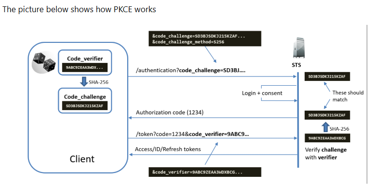
pkka-web. Spring dołącza code_challenge w kroku autoryzacji i code_verifier przy wymianie na token.
Krok 1 — Inicjacja przez Spring
GET http://localhost:8080/oauth2/authorization/keycloak-webSpring Security (klasa OAuth2AuthorizationRequestRedirectFilter) generuje:
| Parametr | Przykład | Uwagi |
|---|---|---|
state | abc123xyz | Losowy token CSRF — weryfikowany przy callbacku |
nonce | def456uvw | Losowy token OIDC — wbudowany w ID token, weryfikowany przez Spring |
code_challenge | mQ8s5...S256 | PKCE S256 — wysyłane do Keycloaka |
Spring zapisuje state, nonce i code_verifier w sesji HTTP (lub cookie), po czym odpowiada 302 Found:
Krok 2 — Autoryzacja w Keycloak
GET http://localhost:8081/realms/pkka/protocol/openid-connect/auth?...Keycloak wyświetla formularz logowania. Użytkownik podaje dane → Keycloak autentykuje i weryfikuje. Jeśli konto OK → Keycloak generuje jednorazowy authorization_code (ważny ~1 minutę) i odsyła przeglądarkę do redirect_uri.
redirect_uri, client_id i sesją użytkownika — nie można go ponownie użyć ani użyć z innym redirect_uri.
Krok 3 — Callback do Spring
GET http://localhost:8080/login/oauth2/code/keycloak-web?code=AUTH_CODE&state=abc123xyzSpring Security (OAuth2LoginAuthenticationFilter) odbiera request i:
Porównuje state z zapisanym w sesji — jeśli niezgodność: 401, atak CSRF.
Wyciąga code i przechodzi do wymiany tokenów.
Krok 4 — Wymiana code → token
POST http://localhost:8081/realms/pkka/protocol/openid-connect/token
Content-Type: application/x-www-form-urlencoded
# Client auth: Basic base64(pkka-web:CLIENT_SECRET) w nagłówku Authorization
# (client_secret_basic — domyślna metoda Spring Security dla confidential client)
grant_type=authorization_code
&code=AUTH_CODE
&redirect_uri=http://localhost:8080/login/oauth2/code/keycloak-web
&code_verifier=R2K9...verifierclient-authentication-method):Spring Security domyślnie używa
client_secret_basic — wysyła credentials w nagłówku Authorization: Basic base64(id:secret). Alternatywnie client_secret_post (credentials w body requestu). W dokumentacji IDP Discorda ustawiono client_secret_post dla brokera — to osobny klient Keycloak–Discord, nie mylić z pkka-web → Keycloak.
Response Keycloaka (200 OK):
{
"access_token": "eyJhb...", // Keycloak JWT — używany do wywołań API backendu
"id_token": "eyJhb...", // JWT z danymi użytkownika (sub, email, nonce)
"refresh_token": "eyJhb...", // używany do odświeżania AT przez Spring
"token_type": "Bearer"
"expires_in": 300 // domyślnie 5 minut
}Krok 5 — Walidacja ID tokena i budowa sesji
Spring Security (klasa OidcAuthorizationCodeAuthenticationProvider) waliduje ID token przed stworzeniem sesji:
| Claim | Weryfikacja |
|---|---|
iss | Musi być równy http://localhost:8081/realms/pkka |
aud | Musi zawierać pkka-web |
nonce | Musi być identyczny z zapisanym w sesji |
exp | Token nie może być wygasły |
| Podpis | Weryfikowany kluczem publicznym z /realms/pkka/protocol/openid-connect/certs |
Klucze JWKS są pobierane raz przy starcie i odświeżane automatycznie (Spring cachuje). Po pomyślnej walidacji Spring tworzy SecurityContext, zapisuje sesję HTTP i przekierowuje użytkownika na oryginalnie żądany zasób.
GET /realms/pkka/protocol/openid-connect/userinfo (Bearer AT) żeby pobrać dodatkowe claimy — zależy od konfiguracji user-info-uri i user-name-attribute. Przy domyślnej konfiguracji OIDC klienta dane użytkownika są wyciągane bezpośrednio z ID tokena (bez dodatkowego wywołania).
Wariant — logowanie przez Discord (broker sub-flow)
Gdy użytkownik klika przycisk Discord na stronie logowania Keycloaka, między krokiem 2 a 3 wchodzi dodatkowy sub-flow:
Custom Login Theme — personalizacja UI Keycloaka
Keycloak pozwala całkowicie zastąpić domyślny wygląd strony logowania własnym motywem (theme). W trybie deweloperskim (start-dev) zmiany są widoczne natychmiast bez restartu.
Struktura katalogu motywu
themes/
└── pkka/ # nazwa motywu = identyfikator w admin
└── login/ # typ: login, account, admin, email
├── theme.properties # wymagany: dziedziczenie i lista CSS
├── resources/
│ ├── css/
│ │ └── pkka.css # własne style
│ └── img/
│ └── logo.png # logo wydziału
├── messages/
│ └── messages_pl.properties # nadpisanie tekstów UI po polsku
└── login.ftl # opcjonalnie: pełne przejęcie HTMLOpcja A — tylko CSS (najszybsza)
Dziedziczysz cały HTML z motywu keycloak, dodajesz tylko własne style. Nie trzeba ruszać FreeMarkera.
theme.properties
parent=keycloak
import=common/keycloak
styles=css/login.css css/pkka.css
kcLogoLink=https://www.agh.edu.pl
kcLogoClass=kcLogoLinkresources/css/pkka.css — przykład brandingu AGH
/* Tło strony logowania */
.login-pf {
background: #1a1a2e !important;
}
/* Karta formularza */
.card-pf {
background: #16213e;
border: 1px solid #0f3460;
border-radius: 12px;
}
/* Logo — zastąp obrazkiem AGH */
#kc-header-wrapper {
background-image: url(../img/logo.png) !important;
background-size: contain !important;
background-repeat: no-repeat !important;
height: 60px;
visibility: visible !important;
}
/* Przycisk "Zaloguj" */
#kc-login {
background: #e94560 !important;
border-color: #e94560 !important;
}
#kc-login:hover {
background: #c73652 !important;
}keycloak oparty na PatternFly 4. Selektory CSS (.card-pf, .login-pf) mogą się różnić między wersjami — użyj DevTools żeby zweryfikować. Alternatywnie, motyw base zawiera tylko minimalny HTML bez stylów, dając pełną kontrolę.Opcja B — pełna kontrola (FreeMarker)
Skopiuj plik login.ftl z dystrybucji Keycloaka i zmodyfikuj go. Dostęp do oryginału przez Docker:
docker exec -it iam-keycloak \
cat /opt/keycloak/themes/keycloak/login/login.ftl > themes/pkka/login/login.ftlPlik jest szablonem FreeMarker — dostęp do zmiennych Keycloaka przez ${url.loginAction}, ${realm.displayName}, ${social.providers} (lista zewnętrznych providerów, np. Discord) itp. Pełna dokumentacja zmiennych: keycloak.org/docs → Server Development → Themes.
Montowanie przez Docker Compose
services:
keycloak:
image: quay.io/keycloak/keycloak:26.0.8
volumes:
- ./themes/pkka:/opt/keycloak/themes/pkka # mount całego katalogu
# ... reszta konfiguracji bez zmian/opt/keycloak/themes/pkka — nazwa folderu wewnątrz themes/ musi być identyczna jak parent folderu motywu. Keycloak wykrywa motywy automatycznie przy starcie.Aktywacja motywu w Keycloak Admin
Sidebar → Realm Settings → zakładka Themes
Login theme → wybierz pkka z dropdown → Save
Odśwież stronę logowania w trybie incognito — motyw aktywny natychmiast (w trybie start-dev).
start-dev Keycloak wyłącza cache motywów — każda zmiana w plikach CSS/FTL jest widoczna po odświeżeniu strony bez restartu kontenera.Nadpisanie tekstów UI (komunikatów)
Plik messages/messages_pl.properties nadpisuje teksty interfejsu. Przykład:
# messages/messages_pl.properties
doLogIn=Zaloguj si\u0119
doRegister=Utw\u00f3rz konto
loginAccountTitle=Klub Alumna AGH Informatyki
loginTitleHtml=Zaloguj si\u0119 do PKKA
socialLoginTitle=Lub zaloguj si\u0119 przez
errorSocialLoginMessage=Logowanie przez Discord nie powiod\u0142o si\u0119.docker exec iam-keycloak cat /opt/keycloak/themes/base/login/messages/messages_en.propertiesBFF Token Handler Pattern — Architektura dwuścieżkowa
Jeden moduł pkka-backend, jeden oauth2Login, dwie rejestracje Keycloaka. Rozgałęzienie Web/Mobile następuje w jednym miejscu — BffAuthenticationSuccessHandler.
Inicjacja logowania
| Klient | URL wejścia | Kto otwiera |
|---|---|---|
keycloak-web | GET /oauth2/authorization/keycloak-web | Przeglądarka (klik "Zaloguj") |
keycloak-mobile | GET /oauth2/authorization/keycloak-mobile | Mobilka (Custom Tabs / SFSafariVC) |
Przepływ po zakończeniu oauth2Login
Kolejne żądania API (/api/**)
Spójność ról — @PreAuthorize działa identycznie
// Ta sama adnotacja, dwa typy principal — Spring Security obsługuje oba
@GetMapping("/api/alumni")
@PreAuthorize("hasRole('VERIFIED_ALUMN')")
public List<AlumniDto> list(@AuthenticationPrincipal Object principal) {
String username = switch (principal) {
case OidcUser u -> u.getPreferredUsername(); // Web (sesja)
case Jwt jwt -> jwt.getClaimAsString("preferred_username"); // Mobile (Bearer)
default -> throw new IllegalStateException();
};
// logika identyczna dla obu ścieżek
}Porównanie ścieżek
| Aspekt | Web (keycloak-web) | Mobile (keycloak-mobile) |
|---|---|---|
| Wejście do flow | /oauth2/authorization/keycloak-web | /oauth2/authorization/keycloak-mobile |
| Callback URI | /login/oauth2/code/keycloak-web | /login/oauth2/code/keycloak-mobile |
| PKCE | S256 (wymagany przez Keycloak) | S256 (wymagany przez Keycloak) |
| client-authentication-method | client_secret_basic | client_secret_basic |
| Tokeny po flow | Sesja Spring (serwer) | Deep link (mobilka → Keychain) |
| Identyfikacja żądań API | Cookie JSESSIONID | Header Authorization: Bearer |
| Typ principal | OidcUser | Jwt |
| CSRF wymagany | Tak (XSRF-TOKEN) | Nie (Bearer jest CSRF-safe) |
client-secret. Obie rejestracje (pkka-web, pkka-mobile) to odrębne klienty Keycloaka — kompromitacja jednego nie wpływa na drugi.
SecurityConfig.java
Chodzi wyłącznie o authenticationEntryPoint — co Spring zwraca gdy żądanie nie jest uwierzytelnione:
Chain 1 (
/api/**) → 401 JSON. Mobilka wysyła Bearer do /api/alumni z wygasłym tokenem — powinna dostać 401, nie redirect na stronę logowania Keycloaka. To samo dla web: gdy sesja wygaśnie podczas AJAX-a, 401 jest obsługiwalny przez JS.Chain 2 (
/**) → redirect do Keycloaka. Przeglądarka wchodzi na /dashboard bez sesji — powinna być odesłana do Keycloaka. Tutaj również jest obsługiwany cały oauth2Login flow (/oauth2/authorization/**, /login/oauth2/code/**, /v3/api-docs/**, /swagger-ui/**) oraz logout.Jeden chain nie może mieć dwóch różnych entry pointów. Podział jest wyłącznie po to żeby
/api/** odpowiadało 401, a reszta robiła redirect. oauth2Login nie jest w Chain 1 — nie jest tam potrzebny, bo API nigdy nie inicjuje flow logowania.
spring-boot-starter-oauth2-resource-server
Chain 1 — /api/**
@Bean @Order(1)
public SecurityFilterChain apiSecurityFilterChain(HttpSecurity http,
JwtAuthenticationConverter jwtAuthenticationConverter) {
http
.securityMatcher("/api/**")
.sessionManagement(s -> s.sessionCreationPolicy(IF_REQUIRED))
.csrf(csrf -> csrf
.csrfTokenRepository(CookieCsrfTokenRepository.withHttpOnlyFalse())
.csrfTokenRequestHandler(new XorCsrfTokenRequestAttributeHandler())
.ignoringRequestMatchers(SecurityConfig::hasBearerToken)) // Bearer jest CSRF-safe z natury
.authorizeHttpRequests(auth -> auth
.requestMatchers("/api/public/**").permitAll()
.requestMatchers("/api/alumni/**").hasRole("VERIFIED_ALUMN")
.requestMatchers("/api/admin/**").hasRole("ADMIN")
.anyRequest().hasRole("USER"))
.oauth2ResourceServer(rs -> rs
.jwt(jwt -> jwt.jwtAuthenticationConverter(jwtAuthenticationConverter))
.authenticationEntryPoint((req, res, ex) -> res.sendError(401, "Unauthorized"))); // nie redirect!
return http.build();
}Chain 2 — oauth2Login (inicjacja logowania Web + Mobile)
@Bean @Order(2)
public SecurityFilterChain webChain(HttpSecurity http,
ClientRegistrationRepository repo,
OAuth2AuthorizationRequestResolver discordBypassResolver,
BffAuthenticationSuccessHandler bffHandler,
JwtDecoder jwtDecoder) throws Exception { // JwtDecoder — do oidcUserService
OidcClientInitiatedLogoutSuccessHandler oidcLogout =
new OidcClientInitiatedLogoutSuccessHandler(repo);
oidcLogout.setPostLogoutRedirectUri("{baseUrl}/");
http
.sessionManagement(s -> s.sessionCreationPolicy(IF_REQUIRED))
.csrf(csrf -> csrf
.csrfTokenRepository(CookieCsrfTokenRepository.withHttpOnlyFalse())
.csrfTokenRequestHandler(new XorCsrfTokenRequestAttributeHandler()))
.authorizeHttpRequests(auth -> auth
.requestMatchers("/", "/login/**", "/error",
"/oauth2/authorization/**", "/login/oauth2/**",
"/v3/api-docs/**", "/v3/api-docs.yaml",
"/swagger-ui/**", "/swagger-ui.html").permitAll()
.anyRequest().authenticated())
.oauth2Login(oauth2 -> oauth2
.authorizationEndpoint(ep -> ep
.authorizationRequestResolver(discordBypassResolver))
.userInfoEndpoint(ui -> ui
.oidcUserService(oidcUserService(jwtDecoder))) // czyta role z AT
.successHandler(bffHandler))
.logout(logout -> logout
.logoutSuccessHandler(oidcLogout)
.invalidateHttpSession(true)
.deleteCookies("JSESSIONID", "XSRF-TOKEN"));
return http.build();
}Mapowanie ról — Web i Mobile unified
// Mobile (Bearer JWT) — Resource Server
@Bean
public JwtAuthenticationConverter jwtAuthenticationConverter() {
var conv = new JwtAuthenticationConverter();
conv.setJwtGrantedAuthoritiesConverter(new KeycloakJwtRoleConverter());
conv.setPrincipalClaimName("preferred_username");
return conv;
}
// Web (oauth2Login) — OidcUserService czytający role z Access Tokena
// AT zawsze niesie realm_access.roles — zero dodatkowej konfiguracji Keycloaka
private OAuth2UserService<OidcUserRequest, OidcUser> oidcUserService(JwtDecoder atDecoder) {
OidcUserService delegate = new OidcUserService();
return request -> {
OidcUser oidcUser = delegate.loadUser(request);
Jwt at = atDecoder.decode(request.getAccessToken().getTokenValue());
Set<GrantedAuthority> authorities = new HashSet<>(oidcUser.getAuthorities());
authorities.addAll(extractRealmRoles(at.getClaims()));
// Zachowaj skonfigurowany user-name-attribute (preferred_username z yml).
// DefaultOidcUser bez nameAttributeKey resetuje getName() do "sub" (UUID),
// ignorując user-name-attribute: preferred_username z konfiguracji providera.
String nameAttr = request.getClientRegistration()
.getProviderDetails().getUserInfoEndpoint().getUserNameAttributeName();
return new DefaultOidcUser(
List.copyOf(authorities), oidcUser.getIdToken(), oidcUser.getUserInfo(), nameAttr);
};
}
// Wspólna ekstrakcja — "verified-alumn" → ROLE_VERIFIED_ALUMN
static Set<GrantedAuthority> extractRealmRoles(Map<String, Object> claims) {
Map<String, Object> ra = (Map<String, Object>) claims.get("realm_access");
if (ra == null) return Set.of();
List<String> roles = (List<String>) ra.get("roles");
if (roles == null) return Set.of();
return roles.stream()
.map(r -> new SimpleGrantedAuthority("ROLE_" + r.toUpperCase().replace("-", "_")))
.collect(Collectors.toUnmodifiableSet());
}
static boolean hasBearerToken(HttpServletRequest req) {
String h = req.getHeader("Authorization");
return h != null && h.startsWith("Bearer ");
}
static class KeycloakJwtRoleConverter
implements Converter<Jwt, Collection<GrantedAuthority>> {
@Override public Collection<GrantedAuthority> convert(Jwt jwt) {
return extractRealmRoles(jwt.getClaims());
}
}nameAttributeKey — zachowaj preferred_username jako nazwę głównąDefaultOidcUser(authorities, idToken, userInfo) bez czwartego argumentu zawsze szuka nazwy głównej w claimie sub (UUID Keycloaka). Konfiguracja user-name-attribute: preferred_username jest wtedy ignorowana — authentication.getName() i token.getName() zwracają UUID zamiast nazwy użytkownika. Wyciągnij skonfigurowany atrybut przez request.getClientRegistration().getProviderDetails().getUserInfoEndpoint().getUserNameAttributeName() i przekaż jako czwarty argument konstruktora.
oidcUserService zamiast keycloakGrantedAuthoritiesMapper?GrantedAuthoritiesMapper działa na OidcUserAuthority niosącym ID token — Keycloak domyślnie nie dołącza realm_access do ID tokena, więc wymagał ręcznego mappera w konfiguracji klienta. OidcUserService ma dostęp do OidcUserRequest z Access Tokenem, który zawsze niesie realm_access.roles — zero konfiguracji Keycloaka.
| Reguła | Efekt |
|---|---|
Chain 1 (@Order(1)) — securityMatcher("/api/**") | Tylko /api/** wchodzi do Chain 1, reszta (login flow) do Chain 2 |
Chain 2 — brak securityMatcher | Obsługuje /oauth2/authorization/**, /login/oauth2/code/**, logout |
Chain 1: IF_REQUIRED + Resource Server | Spring sprawdza sesję przed BearerTokenFilter — istniejąca sesja Web wygrywa nad Bearer |
authenticationEntryPoint w Chain 1 | Brak auth → 401 JSON, nie redirect na /login |
BffAuthenticationSuccessHandler.java
Sesja jest tymczasowo wymagana przez samo Spring Security podczas OAuth2 code flow: gdy mobilka uderza w
/oauth2/authorization/keycloak-mobile, Spring musi gdzieś zapisać state, nonce i code_verifier, żeby zwalidować callback. Używa do tego sesji HTTP. Po udanej wymianie code → token, BffHandler ma dostęp do tokenów i czyści sesję. Bez poniższego kroku z SecurityContextHolder.clearContext() Spring tworzy nową sesję — szczegóły niżej.
Schemat działania
@Component @RequiredArgsConstructor @Slf4j
public class BffAuthenticationSuccessHandler
implements AuthenticationSuccessHandler {
private final OAuth2AuthorizedClientService authorizedClientService;
private final UserProvisioningService userProvisioningService;
private final UserPrincipalExtractor principalExtractor;
@Value("${app.mobile.deep-link-scheme}")
private String mobileDeepLinkScheme;
@Value("${app.web.success-url}")
private String webSuccessUrl;
@Override
public void onAuthenticationSuccess(HttpServletRequest req,
HttpServletResponse res, Authentication auth) throws IOException, ServletException {
principalExtractor.extract(auth).ifPresent(userProvisioningService::provisionIfAbsent);
OAuth2AuthenticationToken token = (OAuth2AuthenticationToken) auth;
String registrationId = token.getAuthorizedClientRegistrationId();
if ("keycloak-mobile".equals(registrationId)) {
handleMobile(req, res, token);
} else {
// keycloak-web: tokeny zostają w sesji, redirect na stronę
new SimpleUrlAuthenticationSuccessHandler(webSuccessUrl)
.onAuthenticationSuccess(req, res, auth);
}
}
private void handleMobile(HttpServletRequest req, HttpServletResponse res,
OAuth2AuthenticationToken token) throws IOException {
String regId = token.getAuthorizedClientRegistrationId();
// 1. Pobierz tokeny (sesja jeszcze istnieje — musi być przed invalidate)
OAuth2AuthorizedClient client = authorizedClientService
.loadAuthorizedClient(regId, token.getName());
if (client == null || client.getAccessToken() == null) {
res.sendError(500, "Failed to retrieve access token");
return;
}
String at = client.getAccessToken().getTokenValue();
String rt = client.getRefreshToken() != null
? client.getRefreshToken().getTokenValue() : null;
// 2. Usuń OAuth2AuthorizedClient — mobilka ma tokeny, backend nie musi
authorizedClientService.removeAuthorizedClient(regId, token.getName());
// 3. KRYTYCZNE: wyczyść SecurityContext PRZED invalidate() i sendRedirect()
// Bez tego SaveContextOnUpdateOrErrorResponseWrapper przechwytuje sendRedirect(),
// widzi niepusty SecurityContextHolder, wywołuje getSession(true) i tworzy
// NOWĄ sesję — response mobilki dostaje Set-Cookie: JSESSIONID=new-id!
SecurityContextHolder.clearContext();
// 4. Invaliduj tymczasową sesję (była potrzebna tylko na state/nonce/code_verifier)
HttpSession session = req.getSession(false);
if (session != null) session.invalidate();
// 5. Deep link z AT + RT
StringBuilder link = new StringBuilder(mobileDeepLinkScheme)
.append("://auth-success#at=")
.append(URLEncoder.encode(at, StandardCharsets.UTF_8));
if (rt != null) link.append("&rt=")
.append(URLEncoder.encode(rt, StandardCharsets.UTF_8));
log.debug("Mobile auth success — redirecting to deep link for user: {}", token.getName());
res.sendRedirect(link.toString());
}
}SecurityContextHolder.clearContext() musi być przed session.invalidate()?Spring Security owija
HttpServletResponse w SaveContextOnUpdateOrErrorResponseWrapper. Kiedy wywołujesz res.sendRedirect(), wrapper najpierw wywołuje saveContext(). Jeśli SecurityContextHolder nie jest pusty, HttpSessionSecurityContextRepository.saveContext() wywołuje request.getSession(true) — tworzy nową sesję i ustawia Set-Cookie: JSESSIONID=<new-id> na response'ie z deep linkiem. Mobilka nieświadomie dostaje ciasteczko sesji na odpowiedzi z 302 myapp://auth-success. clearContext() sprawia, że saveContext() nie ma co zapisać i pomija tworzenie sesji.
JWT pojawia się w
response.sendRedirect(), co loguje go w access logach Tomcata (zależy od konfiguracji). Zalecane mitygacje: (1) ustaw krótki czas życia AT w Keycloaku (300 s = domyślnie); (2) wyłącz logowanie query string w prodzie; (3) rozważ App Links (Android) / Universal Links (iOS) z weryfikacją domeny — eliminuje intent hijacking.
Odmiana z jednorazowym kodem zamiast tokena w URL
Bezpieczniejsza alternatywa: zamiast AT w deep linku, handler zapisuje go tymczasowo w pamięci (Redis/Caffeine) pod losowym kodem jednorazowym i przekierowuje myapp://auth-success?code=XYZ. Mobilka odbiera kod i wykonuje POST /api/mobile/auth/exchange po AT, który jest zwracany w JSON (nie w URL). Kod jest jednorazowy — po wymianie usuwany.